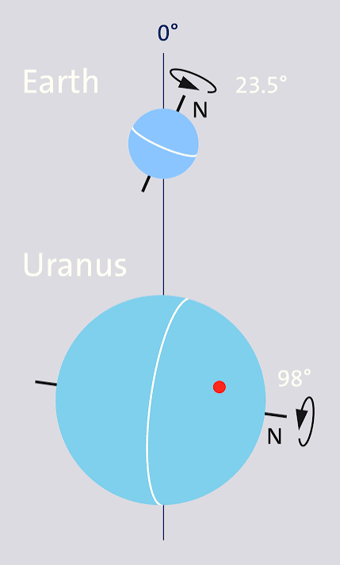

THE SEVENTH PLANET FROM THE SUN
URANUS
The Ice Giant
Uranus is a distant ice giant with a striking blue-green atmosphere. It is famous for its unusual rotation: the planet is tilted so dramatically that it essentially rotates on its side. Its extreme seasons and extremely cold atmosphere make it one of the most unusual planets in our Solar System.
50,724 km
Diameter
84 Years
Orbital Period
98°
Axial Tilt

GET TO KNOW THE PLANET
Explore Uranus
Uranus is the seventh planet from the Sun and the third-largest planet by diameter. It belongs to a group known as ice giants, along with Neptune.
Its atmosphere consists mainly of hydrogen and helium, with methane that absorbs much of the red light and gives the planet its distinctive blue-green colour.
Uranus has an unusual axial tilt of approximately 98 degrees. This means that it rotates almost on its side, causing extreme seasonal changes. Each pole experiences about 42 years of sunlight followed by about 42 years of darkness during its long orbit.
Uranus has 13 known rings and 28 known moons. Its rings are dark, narrow, and much less visible than Saturn's rings.

Uranus appears blue-green because methane in its atmosphere absorbs red light.
URANUS BY THE NUMBERS
Planetary Facts
Diameter
50,724 km
At the equatorDistance from Sun
2.87 billion km
Average distanceOrbital Period
84 Earth years
One complete orbitMain Composition
Water, Ammonia and Methane
Along with hydrogen and heliumRotation Period
About 17.2 Hours
Retrograde rotationKnown Moons
28 Moons
Including Titania and OberonWHAT IS INSIDE URANUS?
Internal Structure
Uranus is an ice giant, meaning its interior contains a large amount of water, ammonia, and methane under extreme pressure. These materials behave very differently from ordinary ice on Earth.
Outer Atmosphere
A layer made mainly of hydrogen and helium, with methane that contributes to its blue-green colour.
Icy Mantle
A deep, hot and dense region containing water, ammonia, and methane under enormous pressure.
Central Core
Scientists believe Uranus has a relatively small, dense central region made of rock and other heavy materials.
A REMARKABLE URANUS FEATURE
A Planet On Its Side

An Extreme Axial Tilt
Most planets rotate with their axes relatively upright compared with their orbital paths. Uranus is different: its axis is tilted by approximately 98 degrees.
This unusual orientation creates extreme seasonal patterns. During parts of its orbit, one pole faces the Sun for decades while the other remains in darkness.
~98°
Axial tilt
~42 Years
Seasonal sunlight or darkness
EXPLORING THE ICE GIANT
Uranus Missions
Voyager 2
NASA's Voyager 2 spacecraft made its closest approach to Uranus in January 1986. It remains the only spacecraft to have visited the planet.
During its flyby, Voyager 2 studied Uranus's atmosphere, magnetic field, rings, and moons. Its observations revealed new details about this distant ice giant.